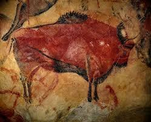
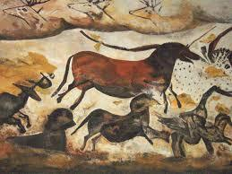
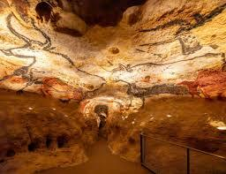

Lower Paleolithic
This period began around 2.6 million years ago. This era saw the development of the first stone tools.Early humans used simple choppers and flakes to process food and materials
Exploring the Stone Age: The First Steps in Humanity and Art
The Paleolithic Era was also known as the Old Stone Age
Took place around approximately 2.6 millions years ago which is back the year of roughly 10,000 BC. This period marks the earliest stage of human development and represents a very important chapter in human evolution.
During this time, early humans developed the first stone tools(hence being called the stone age),learned how to control fire, and began to create art. This art was very special and can still be seen in some caves to this day, an example of the cave art can be seen as below.
The Paleolithic laid a very important foundation for all of history that tended to follow.
This period began around 2.6 million years ago. This era saw the development of the first stone tools.Early humans used simple choppers and flakes to process food and materials
Starting around 300,000 years ago, the Middle Paleolithic period introduced more modern tool-making techniques. The Mousterian tool tradition emerged, featuring the use of flint tools.This period is associated with Neanderthals and early Homo sapiens.
Beginning around 50000 years ago it represents a significant tool advancement. This era saw the creation of cave paintings, carved figures, and more complex tools. It marks the time when modern humans spread across the globe.
The Paleolithic era produced some of humanitys earliest artistic expressions. Cave paintings, carved figurines and decorative objects reveal a rich cultural life
Famous cave paintings from sites like Lascaux in France and Altamira in Spain depict animals, hunting scenes, and abstract symbols. The artwork provides valuable insights into the beliefs and daily life of the Paleolithic people.
Small carved figurines, such as the Venus figurines, represent some of the earliest known sculptures to mankind. These objects may have had religious or symbolic significance
Scholars continue to debate the purpose and meaning of Paleolithic art. Several theories have been proposed.
Some believe that cave paintings were created as part of hunting rituals, with the act of painting animals thought to help ensure a successful hunt.
Others suggest that the art had religious or spiritual meaning, perhaps representing beliefs about the natural world or the afterlife.
Cave paintings may have served as a way to tell stories, pass down knowledge, or teach younger generations about animals and hunting techniques.
Many important Paleolithic sites have been discovered around the world. These locations have provided incredible insights into early human life and art.
Discovered in 1940, Lascaux contains over 600 paintings and 1,500 engravings. The cave paintings are estimated to be over 17,000 years old. The site is so important that a replica cave was created to preserve the original artwork.
Altamira is famous for its stunning bison paintings, created around 36,000 years ago. The paintings are so well-preserved that when first discovered, experts thought they were modern forgeries.
Discovered in 1994, Chauvet contains some of the oldest known cave paintings, dating back over 30,000 years. The cave features paintings of lions, rhinos, and other animals that are incredibly detailed and sophisticated.
Quick video documentry on the Paleolithic prehistoric art.
Many Paleolithic artifacts and artworks have survived for tens of thousands of years, but they require careful preservation.
Cave paintings have survived because caves provide stable environments with constant temperature and humidity. The darkness and isolation of caves protected the artwork from damage.
New Paleolithic sites continue to be discovered today. Modern technology like ground-penetrating radar helps archaeologists find hidden caves and artifacts.
Each new discovery adds to our understanding of early human life and art. Scientists use carbon dating and other techniques to determine the age of artifacts.
Preserving Paleolithic art is challenging. Human presence, changes in cave conditions, and natural processes can damage ancient paintings. Many famous caves are now closed to the public, with replicas created for visitors.
Stone tools were the primary technology of the paleolithic people. These tools were essential for survival and were used for various tasks.
Tool making required skill and knowledge that was passed down through generations.
The quality of tools grew significantly over the course of the Paleolithic era.
The Paleolithic era set the stage for all human development that followed. The innovations and adaptions of the period enabled humans to spread across the globe and eventually develop agriculture and civilisation
We learned through this era by the inspiring artwork of the Paleolithic people as the ventured to the early birth of art with the work of cave paintings and carvings.
Today we continue to learn about this fascinating period through archaeological discoveries, cave art, and the study of the stone tools left behind by our ancestors.